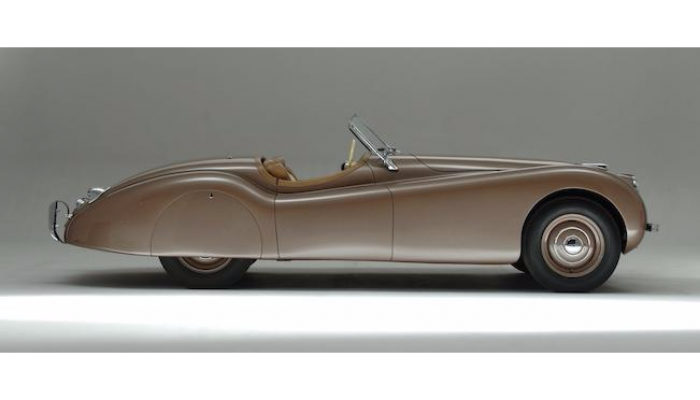

Jaguare
jaguare f-typeJaguar — бренд транснациональной автомобилестроительной компании Jaguar Land Rover. Штаб-квартира находится в пригороде Ковентри графства Уэст-Мидлендс. С 2008 года принадлежит индийской Tata Motors.
История
Существование компании началось с 20-х годов XX века. В это время она была компанией Swallow Sidecar, и производила коляски для мотоциклов. Это не приносило особого дохода, после чего фирма сменила специализацию на производство комплектующих для Austin 7. После выполненного в 1927 году большого заказа доход позволил компании расширить своё производство и производить комплектующие моделей Fiat 509A, Morris Cowley, Wolseley Hornet, а затем стала сама проектировать и разрабатывать новые модели автомобилей. В середине XX века компания сменила название на Jaguar, так как инициалы компании SS ассоциировались после войны с нацистским режимом. В это же время появился Jaguar Mk VII, в котором была увеличена мощность двигателя до 190 лошадиных сил. В 1950 году Jaguar начал сотрудничество с фирмой Daimler Motor Company (не путать с Daimler-Benz), которая выпускала автомобили, по классу близкие к Ягуарам. С 1960 года Daimler стала частью компании Jaguar. Сама компания, у которой начались трудности с продажами, в 1966 году начала сотрудничать и вошла в состав Бритиш Мотор. Начиная с этого времени модели Jaguar стали пользоваться все большей популярностью. К 1960-м годам концерн Jaguar завоевывает американский рынок моделями Jaguar XK150 и XK150 Roadster с объёмом двигателя до 3,4 литра. С 1960-х по 1980-е года были выпущены серии спортивных моделей, а также седанов, которые продавались по высокой цене, но отличались повышенным качеством. В конце 1960-х была выпущена модель Jaguar с модернизированным 6-цилиндровым двигателем. Через некоторое время, в начале 1970-х, начался выпуск Jaguar XJ12, с 12-цилиндровым двигателем, мощностью 311 лошадиных сил. С 1968 по 1983 годы были выпущены следующие модели: Jaguar XJ8 — седан, XJR 4.0 Supercharged, Jaguar XJ-C — купе, Jaguar XJ-S — на нём был впервые установлен двигатель AJ6. В 1988 году была выпущена новая модель, которая снова получила широкую известность — Jaguar XJ220, однако позднее он был изменен и показан в Токио на автомобильной выставке. В конце 1980-х был открыт филиал компании Jaguar Sport, производивший спортивные модели автомобилей. Тогда же Jaguar становится отделением фирмы Ford. В конце 1990-х в Швейцарии на выставке была показана модель спортивного автомобиля в кузове «купе», а также кабриолет. В 2000—2004 гг. автомобили марки Jaguar снова принимали участие в гонках Формула-1 в качестве команды «Ягуар», используя двигатели Cosworth. Специально для этого были выпущены автомобили модели F-Type Concept и Silverstone. В 2019 году электрокару Jaguar I-Pace присудили награду «Автомобиль 2018 года в Европе». Также можно заметить, что этот приз компания получает впервые. В 2019 году компания анонсировала флагманский кроссовер J-Pace, основанный на новой, полностью алюминиевой платформе MLA, которую также планируется использовать в новом поколении внедорожника Range Rover. Автомобиль лишится механического полного привода — в движение заднюю ось будет приводить электромотор, переднюю — традиционный двигатель внутреннего сгорания. Выход автомобиля запланирован на 2021 год.
